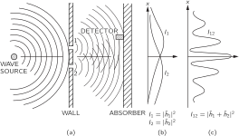

Глава 37. Квантовое поведение
37–1 Атомная механика#
В последних нескольких главах мы с вами рассмотрели многие существенные понятия, без которых невозможно разобраться ни в явлении света, ни вообще в электромагнитном излучении. (Некоторые специальные вопросы — теорию показателя преломления плотного вещества и полное внутреннее отражение — мы отложим до будущих времен.) Мы имели дело с так называемой «классической теорией» электромагнитных волн, и для множества явлений она давала достаточно точное описание природы. И нас не очень заботило при этом, что световая энергия всегда доставляется порциями — «фотонами».
Очередной темой, которой мы собираемся заняться, является проблема поведения сравнительно крупных массивов вещества — их механических или, скажем, их тепловых свойств. Знакомясь с этими свойствами, мы увидим, что «классическая» (или старая) теория здесь немедленно терпит неудачу, потому что вещество на самом деле состоит из частиц атомных размеров. И все же мы будем иметь дело только с классической частью, потому что это единственное, в чем мы можем разобраться с помощью изученной нами классической механики. Но наши успехи не будут велики. Мы обнаружим, что в случае вещества, в отличие от случая со светом, мы довольно быстро натолкнемся на затруднения. Мы могли бы, конечно, постоянно обходить стороной атомные эффекты, но вместо этого мы решили здесь вклинить небольшой экскурс, в котором мы опишем основные идеи квантовых свойств вещества, т. е. квантовые представления атомной физики, чтобы вы получили некоторое представление о том, что именно мы опускаем. Ведь нам придется опустить некоторые важные вопросы, к которым мы не можем не подойти вплотную.
Стало быть, сейчас мы перейдем к введению в предмет квантовой механики. Но по-настоящему проникнуть в суть предмета вы сможете лишь намного позже.
Квантовая механика — это описание поведения мельчайших долек вещества, в частности всего происходящего в атомных масштабах. Поведение тела очень малого размера не похоже ни на что, с чем вы повседневно сталкиваетесь. Эти тела не ведут себя ни как волны, ни как частицы, ни как облака, или биллиардные шары, или грузы, подвешенные на пружинах, — словом, они не похожи ни на что из того, что вам хоть когда-нибудь приходилось видеть.
Ньютон считал, что свет состоит из частиц. А потом оказалось, как мы уже убедились, что свет ведет себя подобно волнам. Позже, однако (в начале XX века), обнаружили, что, действительно, поведение света временами напоминает частицу. Об электроне же, наоборот, сначала думали, что он похож на частицу, а потом было выяснено, что во многих отношениях он ведет себя как волна. Значит, на самом деле его поведение ни на что не похоже. И мы сдались. Мы так и говорим: «Он ни на что не похож».
Однако, к счастью, есть еще одна лазейка: дело в том, что электроны ведут себя в точности подобно свету. Квантовое поведение всех атомных объектов (электронов, протонов, нейтронов, фотонов и т. д.) одинаково: всех их можно назвать «частицами-волнами» (годится, впрочем, и любое другое название). Значит, все, что вы узнаете про свойства электронов (а именно они будут служить нам примером), все это будет применимо к любым «частицам», включая фотоны света.
В течение первой четверти нашего века постепенно накапливалась информация о поведении атомов и других мельчайших частиц, и знакомство с этим поведением вело ко все большему замешательству среди физиков. В 1926—1927 гг. оно было устранено работами Шредингера, Гейзенберга и Борна. Им удалось в конце концов получить непротиворечивое описание поведения вещества атомных размеров. Основные характерные черты этого описания мы и разберем в данной главе.
Раз поведение атомов так не похоже на наш обыденный опыт, то к нему очень трудно привыкнуть. И новичку в науке, и опытному физику — всем оно кажется своеобразным и туманным. Даже большие ученые не понимают его настолько, как им хотелось бы, и совершенно естественно, потому что весь непосредственный опыт человека, вся его интуиция — все это обращено к крупным телам. Мы знаем, что будет с большим предметом; но именно так мельчайшие тельца и не поступают. Поэтому, изучая их, приходится прибегать к различного рода абстракциям, напрягать воображение и не пытаться связывать их с нашим непосредственным опытом.
В этой главе мы сразу же попробуем ухватить самый основной элемент таинственного поведения в самой странной его форме. Мы выбрали для анализа такое явление, которое невозможно, совершенно, абсолютно невозможно объяснить классическим образом. В этом явлении таится самая суть квантовой механики. На самом деле в ней имеется только одна тайна. Мы не можем раскрыть ее в том смысле, что не можем «объяснить», как она работает. Мы просто расскажем вам, как она работает. Рассказывая об этом, мы познакомим вас с основными особенностями всей квантовой механики.
37–2 Опыт с пулеметной стрельбой#

Пытаясь понять квантовое поведение электронов, мы сопоставим их поведение в определенной экспериментальной установке с более привычным поведением частиц, похожих на пулю, и поведением волн, похожих на волны на воде. Сперва мы рассмотрим поведение пуль в экспериментальной установке, схематически показанной на фиг. 37.1. У нас есть пулемет, выпускающий поток пуль. Он не очень хорош, этот пулемет; при стрельбе его пули (хаотически) рассеиваются на довольно широкий угол, как это изображено на рисунке. Перед пулеметом стоит стенка (из броневой плиты), в которой проделаны две дыры размером как раз таким, чтобы пропустить пулю. За стенкой расположен задний щит (скажем, толстая деревянная стена), который будет «поглощать» попавшие в него пули. Перед щитом установлен предмет, который мы назовем «детектором» пуль. Им может служить, скажем, ящик с песком. Любая пуля, попавшая в детектор, застревает и накапливается в нем. При желании мы можем опорожнить ящик и подсчитать число пойманных пуль. Детектор можно передвигать взад и вперед (в направлении, которое мы назовем направлением x). С помощью этого прибора мы можем экспериментально найти ответ на вопрос: «Какова вероятность того, что пуля, прошедшая сквозь отверстия в стенке, попадет в задний щит на расстоянии x от середины?» Прежде всего вы должны понять, что нам приходится говорить о вероятности, потому что невозможно сказать определенно, куда полетит конкретная пуля. Пуля, попавшая в одну из дыр, может срикошетить от ее краев и оказаться в итоге где угодно. Под «вероятностью» мы понимаем шанс того, что пуля попадет в детектор; мы можем измерить его, подсчитав число пуль, попавших в детектор за определенное время, а затем разделив это число на общее число пуль, попавших за это время в задний щит. Или же, полагая, что скорость стрельбы во время измерений всегда была постоянной, искомая вероятность будет просто пропорциональна числу пуль, достигших детектора за некоторый стандартный промежуток времени.
Для наших целей мы бы хотели вообразить несколько идеализированный опыт, в котором пули — это не настоящие пули, а неразрушимые пули: они не могут расколоться пополам. В нашем опыте мы обнаруживаем, что пули всегда приходят порциями, и когда мы находим что-то в детекторе, это всегда одна целая пуля. Если скорость стрельбы пулемета сделать очень низкой, то окажется, что в любой данный момент либо ничего не прилетает, либо одна и только одна — ровно одна — пуля долетает до вала. Кроме того, размер порции, конечно же, не зависит от темпа стрельбы пулемета. Мы будем говорить: «Пули всегда приходят равными порциями». С помощью нашего детектора мы измеряем вероятность прихода порции. И мы измеряем эту вероятность как функцию x. Результаты таких измерений с этим прибором (мы еще не провели этот опыт, так что пока мы просто воображаем его результаты) нанесены на график в части (в) фиг. 37–1. На графике мы откладываем вероятность вправо, а x по вертикали, так чтобы шкала x соответствовала схеме установки. Мы называем эту вероятность P_{12}, потому что пули могли пройти либо через отверстие 1, либо через отверстие 2. Вы, конечно, не удивитесь, что P_{12} велика вблизи середины графика, но становится малой, если x очень велико. Вас может, однако, удивить, почему наибольшее значение P_{12} оказывается при x = 0. Мы сможем понять этот факт, если проделаем наш опыт еще раз, закрыв отверстие 2, а затем еще раз, закрыв отверстие 1. Когда отверстие 2 закрыто, пули могут проходить только через отверстие 1, и мы получаем кривую, обозначенную как P_1 в части (б) рисунка. Как и следовало ожидать, максимум P_1 приходится на то значение x, которое лежит на одной прямой с пулеметом и отверстием 1. Когда отверстие 1 закрыто, мы получаем симметричную кривую P_2, показанную на рисунке. P_2 — это распределение вероятностей для пуль, проходящих через отверстие 2. Сравнивая части (б) и (в) фиг. 37–1, мы получаем важный результат:
Вероятности просто складываются. Действие двух отверстий складывается из действий каждого отверстия в отдельности. Этот результат наблюдений мы назовем отсутствием интерференции по причине, о которой вы узнаете после. На этом мы покончим с пулями. Они приходят порциями, и вероятность их попадания складывается без интерференции.
37–3 Опыт с волнами#

Теперь проведем опыт с волнами на воде. Прибор показан схематически на фиг. 37.2. Это мелкое корытце, полное воды. Предмет, обозначенный как «источник волн», колеблясь при помощи моторчика вверх и вниз, вызывает круговые волны. Справа от источника опять стоит перегородка с двумя отверстиями, а дальше — вторая стенка, которая для простоты сделана поглощающей (чтобы волны не отражались): насыпана песчаная отмель. Перед отмелью помещается детектор; его опять, как и раньше, можно передвигать по оси x. Теперь детектор — это устройство, измеряющее «интенсивность» волнового движения. Представьте себе приспособление, измеряющее высоту волн. Если его шкалу откалибровать пропорционально квадрату высоты, то отсчеты шкалы смогут давать интенсивность волны. Детектор, таким образом, будет определять энергию, переносимую волной, или, точнее, долю энергии, доставляемую детектору.
Первое, в чем можно убедиться при помощи такого волнового аппарата, — это что интенсивность может быть любой величины. Когда источник движется еле-еле, то и детектор показывает тоже чуть заметное движение. Если же движение возрастет, то и в детекторе интенсивность подскочит. Интенсивность волны может быть какой угодно. Мы уже не скажем, что в интенсивности есть какая-то «порционность».
Теперь измерим интенсивность волн при различных значениях x (заставляя источник волн работать всегда одинаково). Мы получим интересную кривую, отмеченную I_{12} в части (в) рисунка.
Мы уже выяснили, как могут возникать такие картины, когда изучали интерференцию электромагнитных волн. В этом случае мы бы обнаружили, что первоначальная волна дифрагирует на отверстиях, и от каждого отверстия расходятся новые круговые волны. Если поочередно закрывать по одному отверстию и измерять распределение интенсивности у поглотителя, то получатся довольно простые кривые интенсивности, показанные на части (б) рисунка. I_1 — это интенсивность волны от отверстия 1 (которую мы находим при измерениях, когда отверстие 2 закрыто), а I_2 — интенсивность волны от отверстия 2 (наблюдаемая, когда отверстие 1 закрыто).
Интенсивность I_{12}, наблюдаемая, когда оба отверстия открыты, конечно же, не равна сумме I_1 и I_2. Мы говорим, что происходит «интерференция» двух волн. В некоторых местах (где кривая I_{12} имеет максимумы) волны оказываются «в фазе», пики волн складываются вместе, давая большую амплитуду и тем самым большую интенсивность. В таких местах мы говорим, что две волны «интерферируют конструктивно». Такая конструктивная интерференция будет наблюдаться везде, где расстояние от детектора до одного отверстия на целое число длин волн больше (или меньше) расстояния от детектора до другого отверстия.
А в тех местах, куда две волны приходят со сдвигом фаз \pi (т. е. находятся «в противофазе»), движение волны представляет собой разность двух амплитуд. Волны «интерферируют деструктивно», интенсивность получается маленькой. Это бывает там, где расстояние от щели 1 до детектора отличается от расстояния между детектором и щелью 2 на нечетное число полуволн. Малые значения I_{12} на фиг. 37.2 отвечают местам, где две волны интерферируют деструктивно.
Вспомните теперь, что количественную связь между I_1, I_2 и I_{12} можно выразить следующим образом: мгновенная высота волны в детекторе от щели 1 может быть представлена в виде (действительной части) \hat{h}_1e^{i\omega t}, где «амплитуда» \hat{h}_1, вообще говоря, комплексное число. Интенсивность пропорциональна среднему квадрату высоты, или, пользуясь комплексными числами, \left|\hat{h}_1\right|^2. Аналогично, для щели 2 высота равна \hat{h}_2e^{i\omega t}, а интенсивность пропорциональна \left|\hat{h}_2\right|^2. Когда обе щели открыты, высоты волн складываются, давая высоту (\hat{h}_1 + \hat{h}_2)e^{i\omega t} и интенсивность \left|\hat{h}_1 + \hat{h}_2\right|^2. Множитель пропорциональности нас сейчас не интересует, так что формулы для интерферирующих волн можно записать в виде
Вы увидите, что этот результат совсем не похож на тот, что получается с пулями (уравнение 37.1). Раскрыв \left|\hat{h}_1 + \hat{h}_2\right|^2, мы увидим, что
где \delta — разность фаз между \hat{h}_1 и \hat{h}_2. Через интенсивности мы можем записать
Последний член в (37.4) и есть «интерференционный член». На этом мы покончим с волнами на воде. Интенсивность может быть любой, и в ней проявляется интерференция.
37–4 Опыт с электронами#
Представим себе теперь такой же опыт с электронами. Схема его изображена на фиг. 37.3. Мы сделаем электронную пушку, которая состоит из вольфрамовой проволочки, нагреваемой электрическим током и помещенной в металлическую коробку с отверстием. Если на проволочку подано отрицательное напряжение относительно коробки, то электроны, испущенные проволокой, будут разгоняться к стенкам и некоторые из них проскочат сквозь отверстие. Все электроны, вылетающие из пушки, будут обладать (примерно) одинаковой энергией. Перед пушкой снова стоит стенка (просто тонкая металлическая пластинка) с двумя отверстиями. За стенкой стоит другая пластинка, которая будет служить «поглотителем». Перед поглотителем мы поместим подвижный детектор. Детектором может быть счетчик Гейгера или, что еще лучше, электронный умножитель, к которому подсоединен динамик.
Заранее предупреждаем вас: не пытайтесь проделать этот опыт (в отличие от первых двух, которые вы, быть может, уже проделали). Этот опыт никогда никто так не ставил. Все дело в том, что для получения интересующих нас эффектов прибор должен быть чересчур миниатюрным. Мы с вами ставим сейчас «мысленный эксперимент», отличающийся от других тем, что его легко обдумать. Что должно в нем получиться, известно заранее, потому что уже проделано множество опытов на приборах, размеры и пропорции которых были подобраны так, чтобы стал заметен тот эффект, который мы сейчас опишем.
Первое, что мы замечаем в нашем опыте с электронами, это резкие «щелк», «щелк», доносящиеся из детектора (вернее, из динамика). Все «щелк» одинаковы. Никаких «полущелков».
Мы замечаем также, что они следуют совершенно не регулярно. Скажем, так: щелк... щелк-щелк... щелк... щелк.... щелк-щелк... щелк... и т. д. Кому случалось видеть счетчик Гейгера, знает, как он щелкает. Если подсчитать, сколько раз динамик щелкнул за достаточно длительное время (скажем, за несколько минут), а потом снова подсчитать, сколько он отщелкал за другой такой же промежуток времени, то оба числа будут почти одинаковыми. Можно поэтому говорить о средней частоте, с которой слышатся щелчки (столько-то «щелк» в минуту в среднем).
Когда мы переставляем детектор, частота щелчков то растет, то падает, но величина (громкость) каждого «щелк» всегда остается одной и той же. Если мы охладим проволоку в пушке, частота щелчков спадет, но каждый «щелк» будет звучать, как прежде. Мы заметим также, что если поставить у поглотителя два отдельных детектора, то щелкает то один из них, то другой, но никогда оба вместе. (Разве что иногда наше ухо не разделит двух щелчков, последовавших очень быстро один за другим.) Мы заключаем поэтому, что все, что попадает на поглотитель, приходит туда «порциями». Все «порции» одной величины: на поглотитель попадает только целая «порция», причем в каждый момент времени только одна. Мы скажем: «Электроны всегда приходят одинаковыми порциями».
Как и в опыте со стрельбой из пулемета, мы попытаемся теперь поискать в новом опыте ответ на вопрос: «Какова относительная вероятность того, что электронная «порция» попадет в поглотитель на разных расстояниях x от середины?» Как и в том опыте, мы получим относительную вероятность, подсчитывая частоту щелчков при стабильно работающей пушке. Вероятность, что порции окажутся на определенном расстоянии x, пропорциональна средней частоте щелчков при этом x.
В результате нашего опыта получена интереснейшая кривая P_{12}, изображенная на фиг. 37.3, в. Да! Именно так и ведут себя электроны!
37–5 Интерференция электронных волн#
Давайте теперь попытаемся проанализировать кривую на фиг. 37.3, чтобы понять поведение электронов. Прежде всего мы должны сказать, что раз они приходят порциями, то каждая порция, которую мы с тем же успехом можем назвать электроном, прошла либо сквозь отверстие 1, либо сквозь отверстие 2. Мы зафиксируем это в виде «Утверждения». Утверждение А: Каждый электрон проходит либо сквозь отверстие 1, либо сквозь отверстие 2.
Исходя из утверждения А, все электроны, приходящие к поглотителю, можно разделить на два класса: (1) те, которые проходят сквозь отверстие 1, и (2) те, которые проходят сквозь отверстие 2. Поэтому наблюдаемая нами кривая должна быть суммой эффектов от электронов, проходящих сквозь отверстие 1, и электронов, проходящих сквозь отверстие 2. Давайте проверим это предположение на опыте. Сначала мы проведем измерения для тех электронов, которые проходят сквозь отверстие 1. Закроем отверстие 2 и подсчитаем щелчки в детекторе. Из частоты щелчков мы получим P_1. Результат измерений показан на кривой P_1 фиг. 37.3, б. Выглядит это вполне разумно. Точно таким же образом измерим P_2 — распределение вероятностей для электронов, прошедших сквозь отверстие 2. Оно тоже показано на рисунке.
Результат P_{12}, полученный при обоих открытых отверстиях, явно не равен сумме P_1 и P_2 — вероятностей для каждого отверстия в отдельности. По аналогии с опытом с волнами на воде мы говорим: «Здесь имеет место интерференция».
Как может возникать подобная интерференция? Может быть, нам стоит сказать: «Ну, это, по-видимому, означает неверность того, что порции проходят либо сквозь отверстие 1, либо сквозь отверстие 2, поскольку, если бы они проходили именно так, то вероятности должны были бы складываться». Может быть, они движутся более сложным путем? Делятся пополам и… Но нет! Они не могут этого сделать, они всегда приходят порциями… «Что ж, быть может, некоторые из них проходят через 1, а затем возвращаются через 2, обходят еще несколько раз или движутся по какому-то другому сложному пути... тогда, закрыв отверстие 2, мы отрежем им путь и изменим вероятность того, что электрон, выйдя из отверстия 1, попадет в конце концов в поглотитель...» Но посмотрите-ка! Есть такие точки, в которые при обоих открытых отверстиях попадает очень мало электронов, а при одном закрытом отверстии их попадает гораздо больше. Выходит, закрытие одного отверстия увеличивает число электронов, проходящих через другое. Заметим, однако, что в центре картины P_{12} более чем вдвое превышает P_1 + P_2. Здесь, закрыв одно отверстие, вы тем самым уменьшаете число электронов, проходящих сквозь другое. Объяснить оба эффекта, предполагая, что электроны блуждают по сложным траекториям, пожалуй, довольно трудно.
Все это выглядит весьма таинственно. И тем таинственней, чем больше об этом думаешь. Идей, объясняющих кривую P_{12} как результат сложного движения отдельных электронов через оба отверстия, было сфабриковано немало. Но ни одна из этих попыток не была успешной. Ни одна не смогла выразить P_{12} через P_1 и P_2.
И все же, как это ни удивительно, математическую связь, связывающую P_1 и P_2 с P_{12}, получить очень просто. Ведь P_{12} похожа на кривую I_{12} на фиг. 37.2, а это было просто. То, что приближается к поглотителю, может быть описано двумя комплексными числами, которые мы можем назвать \hat{\phi}_1 и \hat{\phi}_2 (это функции от x, конечно). Квадрат абсолютной величины \hat{\phi}_1 дает эффект при открытом только отверстии 1. То есть P_1 = \left|\hat{\phi}_1\right|^2. Эффект при открытом только отверстии 2 точно таким же образом получается из \hat{\phi}_2. То есть P_2 = \left|\hat{\phi}_2\right|^2. А общее действие обоих отверстий — это просто P_{12} = \left|\hat{\phi}_1 + \hat{\phi}_2\right|^2. Выкладки абсолютно те же, что и для волн на воде! (Трудно понять, как можно получить столь простой результат, исходя из сложного движения электронов, шныряющих взад и вперед сквозь пластинку по какой-то странной траектории.)
В конце концов мы приходим к следующему заключению: электроны приходят порциями, подобно частицам, а вероятность прибытия этих порций распределена так же, как и интенсивность волн. Именно в этом смысле электрон ведет себя «отчасти как частица, отчасти как волна».
Кстати, когда мы имели дело с классическими волнами, мы определяли интенсивность как среднее по времени от квадрата амплитуды волны и пользовались комплексными числами как математическим приемом для упрощения анализа. Но в квантовой механике оказывается, что амплитуды должны представляться комплексными числами. Действительной части амплитуд недостаточно. Пока, впрочем, это выглядит лишь как техническая подробность, потому что формулы с виду одни и те же.
Поскольку вероятность попадания через оба отверстия выражается столь просто, хотя она и не равна (P_1 + P_2), то этим, собственно, все и сказано. Однако то обстоятельство, что природа поступает именно так, таит в себе множество тонкостей. Мы хотели бы сейчас проиллюстрировать некоторые из них. Прежде всего, так как число электронов, попадающих в данную точку, не равно числу электронов, проходящих через отверстие 1, плюс число электронов, проходящих через отверстие 2 (как следовало ожидать, основываясь на «Утверждении А»), то, несомненно, «Утверждение А» неверно. Неверно, что электроны проходят либо сквозь отверстие 1, либо сквозь отверстие 2. Но этот вывод можно проверить и иначе.
37–6 Наблюдение за электронами#

Проделаем теперь следующий опыт. Добавим к нашему прибору с электронами очень сильный источник света, поместив его позади стенки между отверстиями, как показано на фиг. 37.4. Мы знаем, что электрические заряды рассеивают свет. Поэтому всякий раз, когда электрон летит к детектору (как бы он ни летел), он рассеивает свет, который попадает нам в глаза, и мы видим, куда направляется электрон. Если, например, электрон полетит по траектории через отверстие 2, которая набросана на фиг. 37.4, мы увидим вспышку света вблизи места, помеченного на рисунке A. Если же электрон пройдет через отверстие 1, мы ожидаем увидеть вспышку вблизи верхнего отверстия. Ну а если вспышки появятся в обоих местах одновременно из-за того, что электрон разделился пополам?.. Что ж, давайте проведем опыт!
И вот что мы видим: каждый раз, когда мы слышим щелчок детектора электронов (на поглотителе), мы замечаем также вспышку света либо возле отверстия 1, либо возле отверстия 2, но никогда в обоих местах сразу! И такой результат получается повсюду, куда бы мы ни ставили детектор. Из этого наблюдения мы делаем вывод, что когда мы следим за электронами, то они проходят либо через одно отверстие, либо через другое. Экспериментально утверждение А оказывается безусловно верным.
Что же неверно в нашем рассуждении против утверждения А? Почему P_{12} не равна просто P_1 + P_2? Вернемся к опыту! Давайте проследим за электронами и выясним, что они делают. Для каждого положения детектора (координаты x) мы будем подсчитывать приходящие электроны и одновременно следить, через какое отверстие они прошли, наблюдая за вспышками. Вести этот учет можно следующим образом: всякий раз, когда раздается «щелчок», мы ставим палочку в колонку 1, если вспышка видна у отверстия 1, а если вспышка видна у отверстия 2, мы делаем отметку в колонке 2. Каждый прибывший электрон регистрируется по одному из двух классов: прошедшие через 1 и прошедшие через 2. По числу, записанному в колонке 1, мы находим вероятность P_1' того, что электрон попадет в детектор через отверстие 1, а по числу в колонке 2 получаем P_2' — вероятность того, что электрон попадет в детектор через отверстие 2. Если теперь повторить такие измерения для многих значений x, то мы получим кривые для P_1' и P_2', показанные на фиг. 37.4, б.
Что ж, это не слишком удивительно! Для P_1' мы получаем нечто весьма похожее на то, что получали ранее для P_1, закрывая отверстие 2; а P_2' похоже на то, что получалось при закрытом отверстии 1. Значит, здесь нет никаких фокусов вроде прохождения сквозь оба отверстия сразу. Когда мы наблюдаем за ними, электроны проходят именно так, как мы от них и ожидаем. Независимо от того, открыты отверстия или закрыты, те электроны, прохождение которых через отверстие 1 мы наблюдаем, распределены одинаково, независимо от того, открыто отверстие 2 или закрыто.
Но постойте! Чему теперь равна полная вероятность — вероятность того, что электрон попадет в детектор любым путем? Эта информация у нас уже есть. Мы просто притворимся, что не смотрели на вспышки света, и объединим вместе щелчки детектора, которые мы разделили по двум колонкам. Нам нужно просто сложить эти числа. Для вероятности того, что электрон попадет на экран, пройдя через то или другое отверстие, мы действительно получаем P_{12}' = P_1' + P_2'. Иными словами, хотя нам и удалось проследить, через какое отверстие проходят наши электроны, мы получаем уже не прежнюю интерференционную кривую P_{12}, а новую кривую P_{12}', которая никакой интерференции не обнаруживает! Если выключить свет, то снова восстановится P_{12}.
Мы вынуждены заключить, что когда мы смотрим на электроны, их распределение на экране отличается от распределения в том случае, когда мы на них не смотрим. Может быть, все дело портит включение источника света? По-видимому, электроны очень чувствительны, и свет, рассеиваясь на них, дает им толчок, изменяющий их движение. Мы знаем, что электрическое поле света, действуя на заряд, создает силу. Так что изменения движения, пожалуй, и следовало ожидать. Во всяком случае, свет оказывает на электроны сильное влияние. Пытаясь «следить» за электронами, мы изменили их движение. То есть толчок, получаемый электроном при рассеянии на нем фотона, таков, что движение электрона меняется достаточно сильно: если он должен был попасть туда, где P_{12} максимально, он теперь попадет туда, где P_{12} минимально; вот почему мы больше не видим волнообразных интерференционных эффектов.
Вы можете подумать: «Не пользуйтесь столь ярким источником! Притушите его! Световые волны тогда станут слабее и не будут так сильно возмущать электроны. Разумеется, если делать свет все более и более тусклым, то в конце концов волна окажется столь слабой, что ее действием можно будет пренебречь». Хорошо, давайте попробуем. Первое, что мы замечаем, это то, что вспышки света, рассеянного пролетающими мимо электронами, вовсе не становятся слабее. Вспышка всегда имеет одну и ту же величину. Единственное, что происходит, когда свет притухает, это то, что иногда мы слышим «щелчок» детектора, но вообще не видим вспышки. Электрон проскользнул мимо «незамеченным». Мы наблюдаем, что свет тоже ведет себя подобно электронам; мы знали, что он «волнист», а теперь убеждаемся, что он к тому же распространяется «порциями». Он доставляется — или рассеивается — порциями, которые мы называем «фотонами». Понижая интенсивность источника света, мы не меняем величины фотонов, а меняем только темп, с каким они испускаются. Этим и объясняется, почему при притушенном свете некоторые электроны проскальзывают к детектору незаметно. Просто как раз в тот момент, когда электрон двигался к детектору, фотона в нужном месте не оказалось.
Все это несколько удручает. Если верно, что всякий раз, когда мы «видим» электрон, получается вспышка одинаковой величины, то все увиденные нами электроны оказываются возмущенными. Давайте все же проведем опыт с тусклым светом. Теперь всякий раз, услышав щелчок в детекторе, мы будем вести счет в трех колонках: в колонке (1) — электроны, замеченные у отверстия 1, в колонке (2) — электроны, замеченные у отверстия 2, и в колонке (3) — электроны, вообще не замеченные. Обработав данные (рассчитав вероятности), мы получим следующие результаты: «виденные у отверстия 1» будут распределены по закону P_1'; «виденные у отверстия 2» — по закону P_2' (так что «виденные либо у отверстия 1, либо у отверстия 2» распределяются по закону P_{12}'); а «вообще не замеченные» распределены «волноподобно», совсем как P_{12} на фиг. 37.3! Если электроны не видны, возникает интерференция!
Это уже можно понять. Когда мы не видим электрон, значит, фотон не возмутил его; а если уж мы его заметили, значит, он возмущен фотоном. Степень возмущения всегда одна и та же, потому что все фотоны света производят эффекты одинаковой величины, достаточной для того, чтобы смазать любые интерференционные эффекты.
Нельзя ли как-нибудь увидеть электроны, не возмущая их? В одной из предыдущих глав мы узнали о том, что импульс, уносимый «фотоном», обратно пропорционален его длине волны ( p = h/\lambda). Конечно, толчок, получаемый электроном при рассеянии фотона по направлению к нашему глазу, зависит от импульса, который несет этот фотон. Ага! Если мы хотим лишь слегка возмущать электроны, то нам следовало не снижать интенсивность света, а снизить его частоту (или, что то же самое, увеличить длину волны). Давайте воспользуемся более красным светом. Мы могли бы воспользоваться даже инфракрасным светом или радиоволнами (как в радаре) и «увидеть», куда направился электрон, при помощи оборудования, способного «видеть» свет с большей длиной волны. Если мы воспользуемся более «мягким» светом, то, может быть, нам удастся избежать столь сильного возмущения электронов.
Ну что ж, примемся экспериментировать с длинными волнами. Будем повторять наш опыт, увеличивая все больше и больше длину волны. На первых порах ничего не изменится, все результаты будут прежними. А потом произойдет ужасно неприятная вещь. Вы помните, что, изучая микроскоп, мы заметили, что вследствие волновой природы света появляются ограничения на расстояния, на которых два пятна еще не сливаются в одно. Это расстояния порядка длины волны света. И вот теперь это ограничение опять всплывает. Как только длина волны сравняется с промежутком между отверстиями, вспышки станут такими размытыми, что невозможно будет разобрать, возле какого отверстия произошла вспышка! Мы не сможем больше угадывать, какой дыркой воспользовался электрон! Известно, что где-то проскочил, а где — неясно! И это как раз при таком цвете, когда толчки становятся еле заметными, а кривая P_{12}' начинает походить на P_{12}, т. е. начинает чувствоваться интерференция. И только при длинах волн, намного превышающих расстояние между отверстиями (когда уже нет никакой возможности разобрать, куда прошел электрон), возмущение, причиняемое светом, становится таким слабым, что снова появляется кривая P_{12} (см. фиг. 37.3).
В нашем опыте мы обнаружили, что невозможно приспособить свет для того, чтобы узнавать, через какое отверстие проник электрон, и в то же время не исказить картины. Гейзенберг предположил, что новые законы природы были бы совместимы друг с другом только в том случае, если бы существовали некоторые фундаментальные ограничения на наши экспериментальные возможности, ограничения, которых прежде не замечали. Он предложил в качестве общего принципа свой принцип неопределенности. В терминах нашего эксперимента он звучит следующим образом: «Невозможно соорудить аппарат для определения того, через какое отверстие проходит электрон, не возмущая электрон до такой степени, что интерференционная картина пропадает». Если аппарат способен определять, через какую щель проходит электрон, он не способен оказаться столь деликатным, чтобы не исказить картину самым существенным образом. Никому никогда не удалось изобрести или просто указать способ, как обойти принцип неопределенности. Значит, мы обязаны допустить, что он описывает одну из основных характеристик природы.
Полная теория квантовой механики, которой мы в настоящее время пользуемся для описания атомов, а значит, и всего вещества, зависит от правильности принципа неопределенности. Квантовая механика весьма успешно справляется со своими задачами; это укрепляет нашу веру в принцип. Но если когда-нибудь удастся «разгромить» принцип неопределенности, то квантовая механика начнет давать несогласованные результаты и ее придется исключить из рядов правильных теорий явлений природы.
«Ну, хорошо, — скажете вы, — а как же быть с «Утверждением А»? Верно ли все-таки, что электрон проходит либо сквозь отверстие 1, либо сквозь отверстие 2? Или же это неверно?» Единственный ответ, который может быть дан, таков: мы нашли из опыта, что существует некоторый определенный способ, которым мы должны рассуждать, чтобы не прийти к противоречиям. Вот что мы обязаны говорить (чтобы не делать ошибочных предсказаний): если вы следите за отверстиями, а точнее, если у вас есть прибор, способный определять, проходят ли электроны сквозь отверстие 1 или отверстие 2, то вы можете говорить, что он проходит либо сквозь отверстие 1, либо сквозь отверстие 2. Но если вы не пытаетесь узнать, куда идет электрон, если в опыте нет ничего возмущающего электроны, то вы не смеете говорить, что электрон проходит либо сквозь отверстие 1, либо сквозь отверстие 2. Если вы все же начнете говорить так и делать из этого утверждения различные выводы, то, несомненно, натворите ошибок в своем анализе. Вы вынуждены балансировать на этом логическом канате, если хотите успешно описывать природу.
Если движение всего вещества, подобно электронам, нужно описывать, пользуясь волновыми понятиями, то как быть с пулями в нашем первом опыте? Почему мы не увидели там интерференционной картины? Дело оказывается в том, что у пуль длина волны столь незначительна, что интерференционные полосы становятся очень тонкими. Столь тонкими, что никакой детектор разумных размеров не разделит их на отдельные максимумы и минимумы. Мы с вами видели только нечто усредненное — это и есть классическая кривая. На фиг. 37.5 мы попытались схематически изобразить, что происходит с крупными телами. На фиг. 37.5, а показано распределение вероятностей для пуль, предсказываемое квантовой механикой. Предполагается, что резкие колебания должны дать представление об интерференционной картине от очень коротких волн. Но любой физический детектор неизбежно вынужден будет накрыть сразу множество зигзагов этой кривой, так что измерения, проведенные с его помощью, дадут плавную кривую, показанную на фиг. 37.5, б.

37–7 Исходные принципы квантовой механики#
Теперь подытожим основные выводы из наших опытов. Сделаем мы это в такой форме, чтобы они оказались справедливыми для всего класса подобных опытов. Сводку итогов можно записать проще, если сперва определить «идеальный опыт», т. е. опыт, в котором отсутствуют неопределенные внешние влияния и нет никаких не поддающихся учету изменений, колебаний и т. д. Точная формулировка будет такова: «Идеальным опытом называется такой, в котором все начальные и конечные условия опыта полностью определены». Такую совокупность начальных и конечных условий мы будем называть «событием». (Например: «электрон вылетает из пушки, попадает в детектор, и больше ничего не происходит».) А сейчас дадим нашу сводку выводов.
Сводка Вероятность события в идеальном опыте дается квадратом абсолютной величины комплексного числа \phi, называемого амплитудой вероятности:
Если событие может произойти несколькими взаимно исключающими способами, то амплитуда вероятности события — это сумма амплитуд вероятностей каждого отдельного способа. Возникает интерференция:
Если ставится опыт, позволяющий узнать, какой из этих взаимно исключающих способов на самом деле осуществляется, то вероятность события — это сумма вероятностей каждого отдельного способа. Интерференция отсутствует:
Быть может, вам все еще хочется выяснить: «А почему это? Какой механизм прячется за этим законом?» Так вот: никому никакого механизма отыскать не удалось. Никто в мире не сможет вам «объяснить» ни на капельку больше того, что «объяснили» мы. Никто не даст вам никакого более глубокого представления о положении вещей. У нас их нет, нет представлений о более фундаментальной механике, из которой можно вывести эти результаты.
Мы хотели бы подчеркнуть очень важное различие между классической и квантовой механикой. Мы уже говорили о вероятности того, что электрон попадает туда-то и туда-то в данных обстоятельствах. Мы подразумевали, что с нашим (да и с самым лучшим) экспериментальным устройством невозможно будет предсказывать точно, что произойдет. Мы способны только определять шансы! Это означало бы, если это утверждение правильно, что физика отказалась от попыток предсказывать точно, что произойдет в определенных условиях. Да! Физика и впрямь сдалась. Мы не умеем предсказывать, что должно было бы случиться в данных обстоятельствах. Мало того, мы уверены, что это немыслимо: единственное, что поддается предвычислению, — это вероятность различных событий. Приходится признать, что мы изменили нашим прежним идеалам понимания природы. Может быть, это шаг назад, но никто не научил нас, как избежать его!
Сделаем теперь несколько замечаний об одном утверждении, которое иногда делали те, кто не хотел пользоваться приведенным описанием. Они говорили: «Может быть, в электроне происходят какие-то внутренние процессы, имеются какие-то внутренние переменные, о чем мы пока ничего не знаем. Может быть, именно поэтому мы не умеем предугадывать, что случится. А если бы мы могли попристальней вглядеться в электрон, то смогли бы сказать, куда он придет». Насколько нам известно, такой возможности нет. Трудности все равно остаются. Предположим, что внутри электрона есть механизм какого-то рода, определяющий, куда электрон собирается попасть. Тогда эта машина должна определить также, через какое отверстие он намерен проследовать. Но не забывайте, что вся эта внутриэлектронная механика не должна зависеть от того, что делаем мы, и, в частности, от того, открыли мы данное отверстие или нет. Значит, если электрон, отправляясь в путь, уже прикинул (а) сквозь какую дырку он протиснется и (б) где он приземлится, то мы получим P_1 для тех электронов, которые облюбовали отверстие 1, P_2 для тех, которые облюбовали отверстие 2, и с необходимостью сумму P_1+P_2 для тех электронов, которые прошли через оба отверстия. Не видно способа обойти этот вывод. Но мы экспериментально доказали, что он неверен. Никто еще не нашел отгадки этой головоломки. Стало быть, в настоящее время приходится ограничиваться расчетом вероятностей. Мы говорим «в настоящее время», но мы очень серьезно подозреваем, что все это — уже навсегда, и разгрызть этот орешек человеку не по зубам, ибо такова природа вещей.
37–8 Принцип неопределенности#
Вот как сам Гейзенберг первоначально сформулировал принцип неопределенности: если вы проводите измерение какого-либо объекта и можете определить x -компоненту его импульса с неопределенностью \Delta p, то вы не можете одновременно знать его x -координату с точностью, большей чем \Delta x\geq\hbar/2\Delta p. Произведение неопределенностей положения и импульса в любой момент времени должно быть больше или равно половине приведенной постоянной Планка. Это частный случай принципа неопределенности, который был сформулирован выше в более общем виде. Более общая формулировка заключалась в том, что нельзя никаким образом устроить прибор, определяющий, какая из двух альтернатив выбрана, без того, чтобы в то же время не разрушилась интерференционная картина.
Сейчас на одном частном случае мы покажем, что соотношение типа соотношения Гейзенберга должно быть верным, чтобы избежать трудностей. Представим себе такое видоизменение опыта, показанного на фиг. 37.3, в котором стенкой с отверстиями служит пластинка на катках, способная свободно перемещаться вверх и вниз (в x -направлении), как показано на фиг. 37.6. Внимательно следя за движением пластинки, можно попытаться узнать, сквозь какое отверстие прошел электрон. Представьте, что случится, когда детектор поставят в x = 0. Мы ожидали бы, что электрон, проходящий через отверстие 1, должен отклониться вниз пластинкой, чтобы попасть в детектор. Так как вертикальная компонента импульса электрона изменяется, пластинка должна испытать отдачу с таким же импульсом в противоположном направлении. Пластинка испытает толчок вверх. Если электрон проходит через нижнее отверстие, пластинка должна почувствовать толчок вниз. Ясно, что при любом положении детектора импульс, получаемый пластинкой, при прохождении через отверстие 1 будет иметь другое значение, чем при прохождении через отверстие 2. Итак! Ни капельки не возмущая электроны, а лишь следя за пластинкой, мы можем узнать, каким путем воспользовался электрон.

Чтобы определить это, нам нужно только знать, каков был импульс экрана до прихода электрона. Тогда, измерив импульс экрана после пролета электрона, мы сразу увидим, насколько он переменился. Но вспомните, что, согласно принципу неопределенности, при этом уже невозможно будет знать положение пластинки с произвольной точностью. Однако если мы не знаем точно, где она находится, как же мы узнаем, где эти два отверстия? Для каждого нового электрона, проникающего сквозь пластинку, отверстия окажутся на новом месте. А это значит, что центр нашей интерференционной картины для каждого электрона тоже будет на новом месте. Интерференционные полосы (колебания вероятности) смажутся. В следующей главе мы докажем численно, что при измерении импульса пластинки (достаточно точном для того, чтобы из измерений отдачи узнать номер отверстия) неопределенности в координате x пластинки, согласно принципу неопределенности, как раз хватит на то, чтобы сдвинуть возникающую в детекторе картину вверх и вниз в x -направлении примерно на расстояние от максимума до ближайшего минимума. От этих случайных сдвигов картина интерференции размажется и от нее в конце концов не останется и следа.
Принцип неопределенности «спасает» квантовую механику. Гейзенберг понимал, что если б можно было с большей точностью измерять и положение, и импульс одновременно, то квантовая механика рухнула бы. Вот он и допустил, что это невозможно. Тогда люди принялись придумывать способы, как все-таки это сделать. Но никому не удалось представить себе способ, как измерять положение и импульс чего угодно — экрана, электрона, биллиардного шара, любого предмета — с большей точностью. И квантовая механика продолжает вести свой рискованный, впрочем, вполне четко очерченный образ жизни.